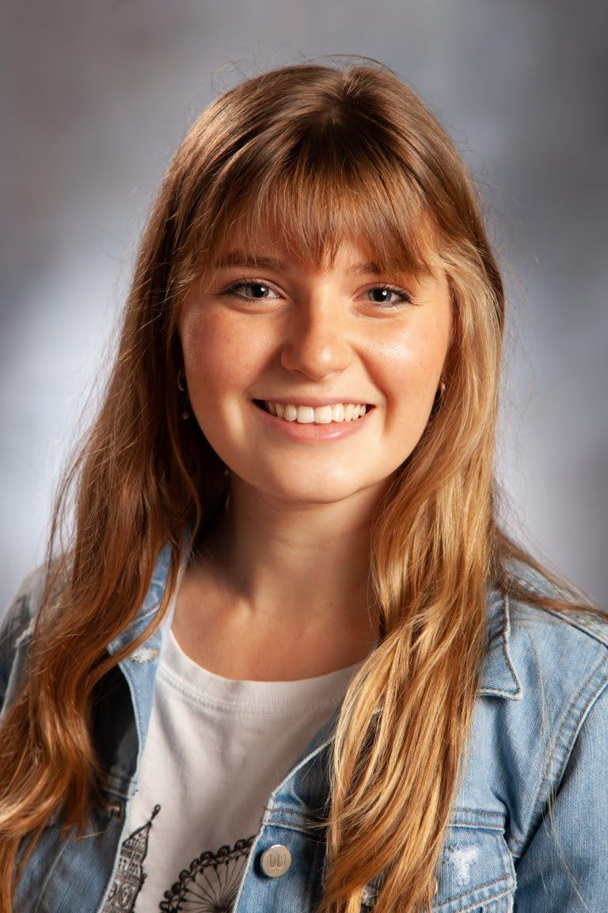

Get to know me
Hi! My name is Martina Pascuzzo. Also known as "Martina from Argentina." I am a Sophomore studying Interactive Digital Media: Content & Strategy at Northwest Missouri State University, located in Maryvile, Missouri. Language learning is among my passions so, besides perfecting my English on a daily basis and speaking Sapnish as a native, I am studying French. I am a communicative and friendly person with a curious heart, so I'm always asking questions about what surrounds me.
About my work
I am very passionate about graphic and web design, and I also have a flair for photography. I have done some freelance work designing websites, logos, managing social media, creating visual content, flyers, food photography, and developing my own small business.